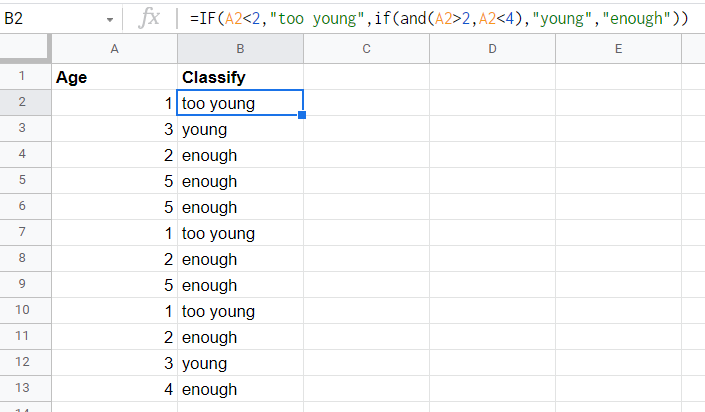
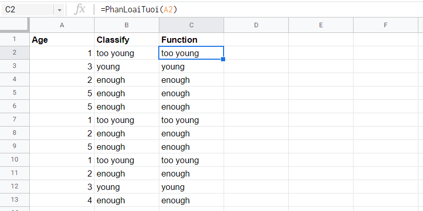

📚 #1.Custom Function
Questions & Answer:
- Function là gì, nghe lạ quá ?? 👉 Function là cái này
=SUM(A1),=VLOOKUP(A1,B1:K,2,0) - Tại sao phải custom? 👉 Vì chúng ta muốn tính toán nhanh hơn theo ý của chúng ta
- Không tạo thì giải quyết được vấn đề không ? 👉 Vẫn giải quyết được !! Bởi vì hàm của Google đã đủ xài cho các bạn rồi, tuy nhiên để xử lý từ đầu đến cuối phải kết hợp các function lại với nhau, và nếu quá trình tính toán phức tạp bạn sẽ dễ nhầm lẫn và tốn rất nhiều công sức, vậy nên học để giảm tải sai sót
- Rườm rà, theo văn phòng chứ đâu phải theo code đâu, học chi tốn thời gian?? 👉 Nó cũng giống như chuyện bạn sử dụng VBA trong excel, nó giúp bạn tối ưu hóa quá trình tính toán, việc sở hữu kỹ năng này không những giúp bạn nổi bật trong mắt đồng nghiệp mà nó còn tạo điểm nhấn cho bạn để bạn được thăng tiến cao hơn. Nhưng tôi không ép, tùy bạn !!
- Tôi thử học code nhiều rồi, tôi học không vô ??👉 bạn nên có bài toán ứng dụng thực tế, tôi sẽ giúp bạn một phần, phần còn lại bạn phải tự tìm hiểu mới có ý nghĩa!! Chúc bạn thành công
Đề bài như sau:
⏱ Phân loại số tuổi trong cột ! Nếu sử dụng hàm GS nó sẽ thành ra thế này
=IF(A2<2,"too young",if(and(A2>2,A2<4),"young","enough")), Nó có dài và gõ lâu quá không ??

👉 Bạn hoàn toàn có thể chuyển công thức trên chỉ đơn giản như vầy =PhanLoaiTuoi(A2), dễ không ?? Rất dễ, nhưng khoan, hãy đọc cơ bản về tạo project script đã rồi mình bắt đầu nhé !!
Action Lists:
- Bước 1: Tạo một project script mới bằng cách Tool > Script Editor
- Bước 2: Nhập dòng code bên dưới vào khung script editor
function PhanLoaiTuoi(input){
if(input < 2){
var output = 'too young'
} else if (input < 4 && input >2){
var output = 'young'
} else {var output = 'enough'}
return output;
}=PhanLoaiTuoi(A2) và nhập ô mà mình muốn phân loại và xem thành quả nhé !

Kết Luận:
Giữa hai hàm mà bạn gọi ra để tính toán là hàm =IF(A2<2,"too young",if(and(A2>2,A2<4),"young","enough")) và hàm =PhanLoaiTuoi(A2), thì dĩ nhiên là chúng ta sẽ thích hàm bên phải hơn rồi đúng không, vì nó dễ và dù có sai chúng ta chỉ cần sửa một lần trong Script Editor mà thôi